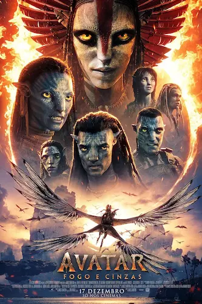

Avatar

O Início e o Programa Avatar: Jake Sully assume o lugar de seu irmão gêmeo cientista, morto em um assalto, porque ambos possuem o mesmo DNA necessário para ligar-se ao caro corpo Avatar. Em Pandora, ele conhece a Dra. Grace Augustine, que busca uma aproximação pacífica e educacional com os nativos, mas é pressionado pelo Coronel Quaritch a atuar como espião tático para encontrar as fraquezas dos Na'vi.
O Conflito de Interesses: Jake se torna um guerreiro oficial da tribo e inicia um romance com Neytiri. A situação atinge o limite quando a RDA decide destruir a Árvore-Mãe (lar dos Omatikaya) para acessar o mineral que está abaixo dela. Jake tenta mediar a paz, mas Quaritch ordena o ataque massivo, resultando na destruição do lar dos nativos e na morte de muitos, incluindo o pai de Neytiri.
A Rebelião e a Batalha Final: Considerado traidor por ambos os lados, Jake reconquista a confiança dos Na'vi ao domar o Toruk, o predador voador mais lendário de Pandora, tornando-se o líder Toruk Makto. Ele convoca todos os clãs de Pandora para lutar contra a tecnologia humana. Na batalha final, a própria fauna de Pandora se volta contra os invasores a pedido de Eywa.
Desfecho: Após a vitória, a maioria dos humanos é expulsa de volta para a Terra. Com a ajuda de um ritual espiritual na Árvore das Almas, a consciência de Jake é transferida permanentemente de seu corpo humano debilitado para o seu corpo Avatar, permitindo que ele viva para sempre como um Na'vi.